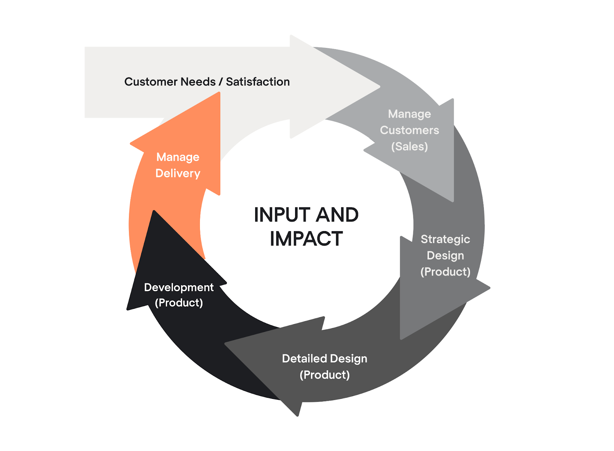

Design-driven development (DDD) asetab disaini toodete loomisel kõige ette.
Selle asemel, et käsitleda disaini pelgalt esteetilise järelmõttena, rõhutab DDD selle
keskset rolli tarkvara suuna ja funktsionaalsuse määramisel.
Tööstuse üleminek jäigalt Waterfall mudelilt adaptiivsele Agile projektijuhtimise
raamistikule tõi esile vajaduse kiirete iteratsioonide ja kasutajakesksete lahenduste järele.
DDD kasutab nende iteratsioonide juhtimiseks disaini jõudu,
tagades toodete toimimise ja lõppkasutajatega resonantsi.

| Head | Halvad |
|---|---|
| Enne koodi sisestamist saab rakenduse välimust ja olemust viimistleda | Kujundused ei pruugi alati olla täiesti koodisõbralikud |
| Kasutajate lood on täpsemad ja neid on lihtsam kirjutada | Äärejuhtumid võivad tekkida. (Äärejuhtum on probleem või olukord, mis ilmneb ainult äärmusliku (maksimaalse või minimaalse) tööparameetri juures. Näiteks võib stereokõlar maksimaalse helitugevusega esitamisel heli märgatavalt moonutada.) |
| Arendajad ei pea tegutsema UI/UX disaineritena | Keeruline liitumisprotsess |
| Rakenduse loomisel saab kulusid vähendada | Reaalajas rakendus võib minna kujundusest erinevas suunas |